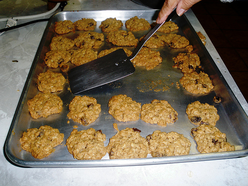
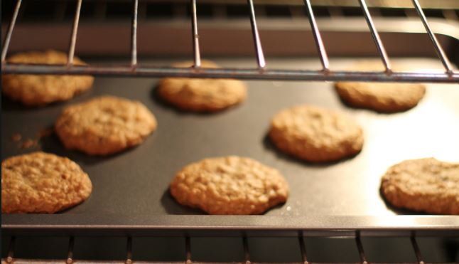
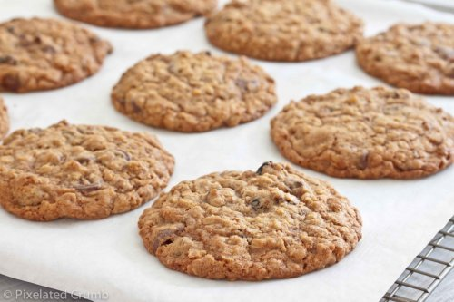

Galletas de avena.
Procedimiento
1. Mezclamos todos los ingredientes en un bol hasta formar una pasta, todo muy bien mezclado.

2. Forramos la bandeja del horno con papel sulfurizado o vegetal y vamos formando las galletas de avena en hojuelas haciendo unas bolas y luego aplastándolas con las manos pero que no sean muy gruesas.

Volver
3. Con el horno previamente precalentado a 200 ºC con calor arriba y abajo y con aire al medio metemos las galletas de avena fáciles de hacer durante unos 10 minutos o hasta que estén doraditas, es decir, un ligero tostado (no mucho).

4. Pasado ese tiempo dejamos que las galletas de avena fáciles y rápidas de hacer se enfríen y las guardamos en una caja o bote cerrado para que sigan crujientes. ¡Duran 3 días!
